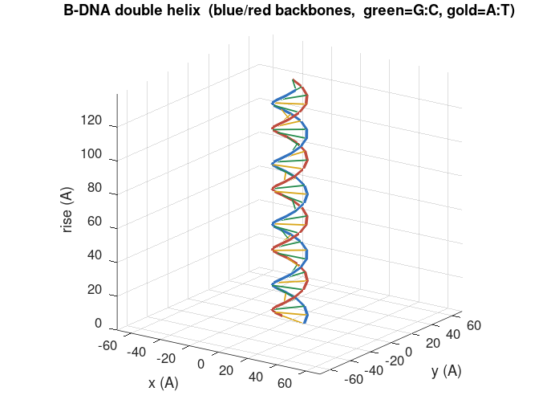
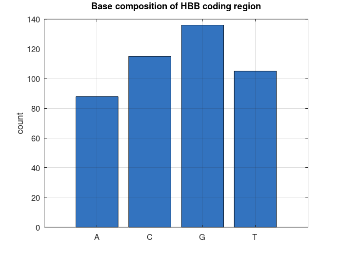
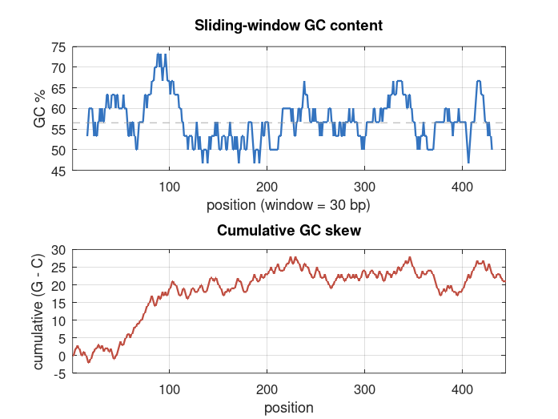

Euler's Identity e^(iπ) + 1 = 0, computed via exp() and checked against machine epsilon.
GNU Octave · Math & Physics Lab
A catalog of every .m script in this folder: number theory, curvature,
Fourier & Hilbert space, game theory, quantum mechanics, and a few unclassifiable detours
through DNA and water molecules. All scripts target GNU Octave 7+ with no toolboxes.
No files match that search.
e, e^{iθ}, and the unit circle as a complex exponential.
Euler's Identity e^(iπ) + 1 = 0, computed via exp() and checked against machine epsilon.
Approximates e via the compound-interest limit and the factorial series; verifies Euler's formula.
Identical content to euler2.m — e via compound interest and the factorial series.
Verifies Euler's formula numerically: the unit circle traced by e^{iθ}.
3D helix visualization of e^{iθ}, stacking the complex exponential along time.
Derives angle-addition trig identities (cos/sin of α+β) directly from Euler's formula.
The unit circle as an algebraic group: points (cos θ, sin θ) with angle addition as the group law.
From ∑1/n² to Euler products to the still-open Riemann Hypothesis.
Partial sums of the Basel series ∑1/n², plotted converging toward π²/6.
Approximates ζ(s) via the Euler product over primes.
Combined demo: Euler's identity on the unit circle, the Basel problem, and the e series.
Basel sum, Euler product, ζ(2), ζ(4), the ζ(−1)=−1/12 regularization, Casimir energy, and π(x)~x/log x.
Riemann Hypothesis overview and numerical exploration of non-trivial zeta zeros.
A more heavily-documented outline script covering the same Riemann Hypothesis ground as rh3.m.
Totients, congruences, Gaussian integers, graphs, and cryptography.
Königsberg's bridges as an adjacency matrix; checks for an Eulerian circuit or trail.
Congruence basics: mod arithmetic, a multiplication table mod 7, and a powermod helper.
Identical content to euler5.m — congruence basics and the mod-7 multiplication table.
Congruence warm-up followed by a from-first-principles implementation of Euler's totient function.
Totient by brute-force gcd counting vs. Euler's product formula, side by side.
Visualizes coprimality up to n as a sieve.
φ(n): counts 1≤k≤n with gcd(k,n)=1. Example: phi_euler(12) → 4.
A full worked lab on Euler's totient function φ(n), built out step by step.
Visualizes multiples of a (mod m) as clock arithmetic. Example: modular_clock(7,12,20).
General Eulerian-trail condition check from vertex degrees (the Königsberg bridges, formalized).
Explores ℤ[i]: norm N(a+bi)=a²+b², and the Gaussian-prime test.
Totient, Euler's theorem, modular inverse via extended Euclid, fast modpow, toy RSA, and Diffie–Hellman.
A proof-outline script surveying Fermat's Last Theorem.
Gaussian-integer arithmetic representing a+bi as [a, b] pairs.
Least-squares line fit y = mx + b (Gauss, 1809), with residual plots.
Plots the normal distribution and shades the 68-95-99.7 rule.
Fits a parabola through three observed points — the shape of a projectile, or Ceres' apparent path.
A signal with two hidden tones plus noise; shows the DFT as a matrix of Euler's formula.
Gaussian curvature K for a paraboloid z = ax²+by² (Theorema Egregium). Example: curvature_demo(1,1).
Gaussian curvature, saddle vs. sphere, string vibration modes, and a note on Calabi–Yau Ricci-flatness.
Space-filling Hilbert curve, [0,1] → [0,1]².
Space-filling curve plus a note linking it to cardinality and Hilbert-space completeness.
Nash–Kuiper embedding: corrugation that preserves length.
Bijections for Hilbert's infinite hotel: n→n+1, n→2n, and Cantor pairing.
L2 Fourier series approximation and Parseval's identity.
Modified Gram–Schmidt: builds an orthonormal basis of a Hilbert space ℝⁿ.
2×2 symmetric eigen-decomposition as ellipse axes, plus the Hilbert matrix's condition-number explosion.
Fourier series synthesis, FFT spectrum, Parseval's identity, and the Gibbs phenomenon.
The catenary as the curve minimizing potential energy, via the Euler–Lagrange equation.
Pure and mixed Nash equilibria for a 2×2 bimatrix game.
Plots expected payoffs vs. mixed strategies to visualize best-response curves.
Nash bargaining solution: maximizes (u1−d1)(u2−d2) over a convex polygon of feasible outcomes.
Cournot duopoly: solves for Nash equilibrium quantities.
Nash–Moser: a smoothed, damped Newton's method compared against the plain version where derivatives lose regularity.
EM plane waves e^{i(kx−ωt)}, the Helmholtz equation, RLC impedance Z=R+i(ωL−1/ωC), and resonance ω₀=1/√LC.
Phasor diagrams: V=IZ, VR+VL+VC, and |Z|, arg(Z).
Matrix mechanics in ten lines: builds X and P for the harmonic oscillator and checks XP−PX ≈ i·I.
Schrödinger's cat as a wavepacket "sometimes in the middle," solved with Crank–Nicolson.
Newton's three-body problem, numerically simulated.
Applies the midpoint method to the three-body problem, linking two related numerical ideas.
Bridges the three-body problem with a Schrödinger-equation treatment.
Solves an ODE y′=f(t,y) with the explicit Euler method. [t,y]=euler_method(f,t0,tf,y0,h).
An earlier variant of the explicit Euler integrator with a different argument order.
The mathematics of DNA — base composition, GC content, and helical geometry.
H₂O molecular geometry.
H₂O as a covalent molecule: 3D geometry, the ~104.5° bond angle, and animated normal modes.



The same scripts, re-grouped into self-contained folders with their own README — meant for standalone distribution alongside an HTML compendium.
11 scripts on totients, Euler's identity, the Basel sum, the Euler-product ζ(s), Königsberg, modular arithmetic, Gaussian integers, and curvature.
View README →12 scripts split into NASH (equilibria, bargaining, Cournot, embedding) and HILBERT (infinite hotel, Fourier, Gram–Schmidt, spectral theory, space-filling curves, catenaries).
View README →7 scripts tracing one throughline — Fourier → Maxwell → circuits, Gauss's totient → RSA cryptography, curvature → Calabi–Yau strings, and the Basel sum → ζ-regularization → string theory's D=26.
View README →Plain-text explainer on the midpoint Riemann sum method, companion to three_body_midpoint_demo.m.